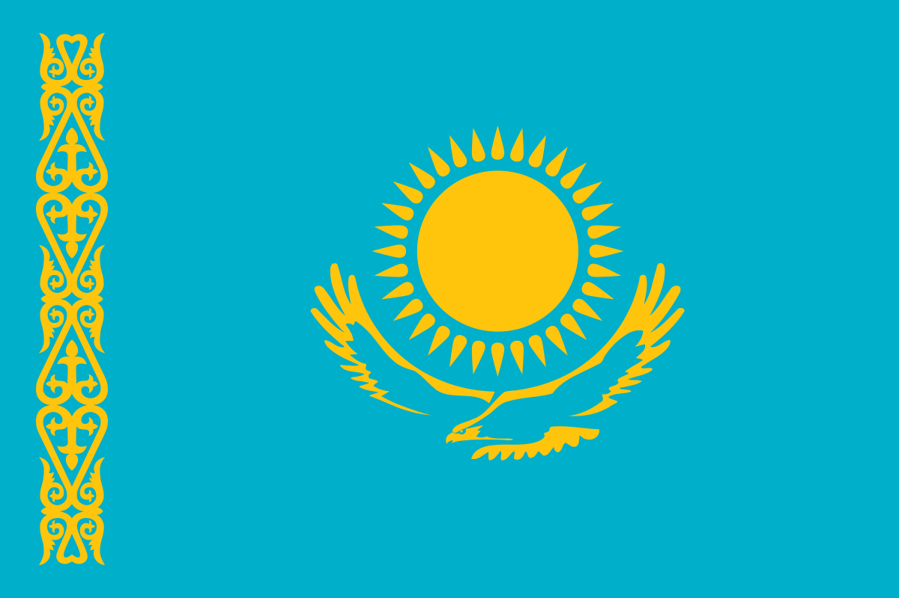

Central Asia Public Health Measures
Countries in Central Asia started to report their first COVID-19 cases in mid-March and the number of cases has risen significantly since, following a similar trend to most of the world. Most Central Asian countries have taken strong measures to protect the health of their population and contain the pandemic, including quarantines, lockdowns and awareness campaigns.
 Kazakhstan
Kazakhstan declared a state of emergency on 16 March that ended on 11 May. Exports of key food products have been banned, while imports of food products and freight have been maintained and a cap on food prices introduced. The government has closed all borders to entry of non-citizens, has initially quarantined the main cities of Nur-Sultan and Almaty, then also Shymkent and remaining regions, and has put air,train, and car traffic on hold, though national traffic is now resuming. Educational institutions, public places, non-essential businesses have been closed, and working hours of public transport limited. Quarantine measures are being cautiously relaxed with the reopening of stores. A recent surge in cases has prompted the government to restate the importance of social distancing and containment measures in local media. The government required to wear masks in all public places and transport. A new hospital has been built in Nur-Sultan and is operating, and the number of people for COVID-19 testing is planned to be increased up to 25,000 per day. According to official statistics, more than 662,000 people have been tested so far.
 Kyrgyzstan
Kyrgyzstan
The government has declared a state of emergency, with some districts in quarantine and Bishkek under a nightly curfew. With deconfinement measures in place, regulations on movement and curfew are gradually being relaxed. All education facilities are closed until 1 September, with online enrolment in selected cities. Mobility across the country is restricted, and large gatherings are banned. Border crossings and freight are restricted, with foreign nationals facing a temporary travel ban.
Tajikistan
Prior to the first cases of COVID-19 in Tajikistan at the end of April, local containment measures had been comparatively limited. The country’s borders and airspace for all international air carriers were closed, but freight transport remained in operation, though foreign drivers were not allowed to enter the country. Public places are being disinfected on a daily basis and awareness campaigns are being held to inform the population on the effects of the virus. At the end of April, the government took additional measures to stop the spread of the virus. All citizens are now required to wear masks in public and mass events are restricted to a minimum. .
 Turkmenistan
Turkmenistan
As of early April 2020, there were no officially confirmed cases of COVID-19 in Turkmenistan. The government has generally refrained from talking about the pandemic, and aside from some limited public health information, there has been little guidance to citizens or firms on preventive measures. Nevertheless, the government has taken a number of steps to prevent a COVID outbreak. It has closed its borders to non-nationals, and all non-Turkmen carriers have ceased flights to the country. Significant restrictions on internal movement have also been put in place. Turkmenistan has one of the highest ratios of out-of-pocket spending to total health expenditure in the world, which means that the costs of a major COVID outbreak might be passed onto an economically precarious population, particularly at a time when public finances are likely to come under severe pressure.
Uzbekistan
Uzbekistan began implementing national quarantine and preventative measures in March. Borders have been closed, and the capital, Tashkent, has been quarantined. All transport within the country has been put on hold, and schools, public places and non-essential businesses have been closed. Only freight transport has been excluded from bans. Remote schooling has covered around 500,000 students and 7m children from more than 10 000 education institutions while final exams at higher educational institutions will be held online. These measures are being relaxed as Uzbekistan is moving to deconfinement. The country is also expecting to open the first wing of a new 10,000-bed hospital in May to help manage the pandemic.